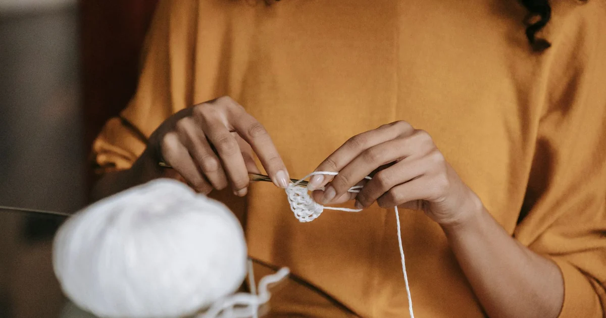
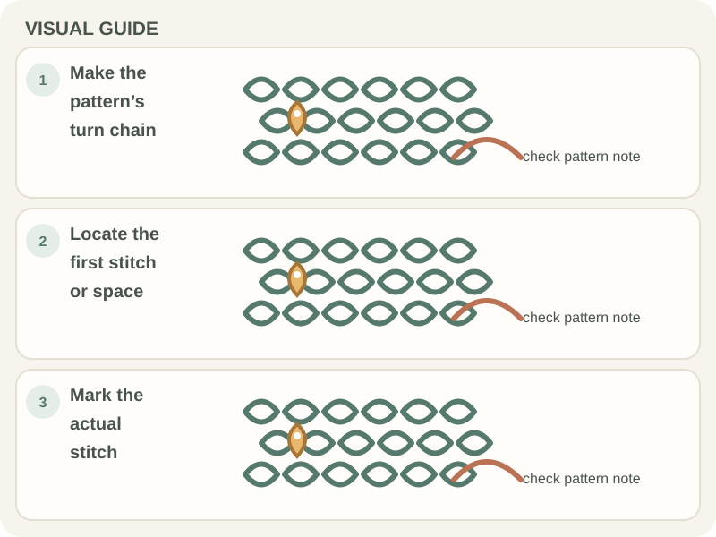

Patterns & Troubleshooting · Beginner guide
How to Find the First Stitch in a Crochet Row
Find a row’s first stitch beneath or beside the turning chain, according to the pattern’s edge rule.

The first stitch can hide beneath the turning chain or blend into the edge. Skipping it repeatedly can make a rectangle narrower.
Before you begin
Check whether the turning chain counts. A stitch marker in the edge stitch can make the next turn easier.
Step-by-step instructions
- After turning, identify the turning chain and the first completed stitch beside it; do not assume the chain is the first stitch.
- Look for the top V of the edge stitch and separate strands gently with the hook tip if needed.
- Work into the location the pattern requires and mark it if it remains hard to see.
- At the other edge, check whether the final stitch belongs in the turning chain or last top V.

What to check
Look for the top V
Count after a few passes. If the count drops by one each row, inspect the first stitch; if it grows, check whether the turning chain is counted twice.
Frequently asked questions
Is the turning chain the first stitch?
Sometimes it counts and sometimes it does not. Use the pattern’s explicit rule.
Can I use a marker every row?
Yes. Marking the edge stitch can help until you recognize it easily.
Should I work into the turning chain?
Only when the pattern says to. Some patterns count it as a stitch and others do not; the rule can affect both row ends.
Recognize the edge after turning
After turning, the working yarn and hook can make the edge look like a stitch. First identify the top V of the last completed stitch in the row you just finished. The turning chain sits beside it and may be taller or looser, but whether it counts is a pattern choice. Look for a note that says whether the chain counts and where the next row begins.
If you cannot see the top V, tilt the fabric toward the light and separate the strands gently with the hook tip. Do not pull the edge apart hard; stretching can make the stitch top harder to identify. A removable marker in the first actual stitch helps you recognize the same location when you return to the next row.
Keep the first and last stitch rule consistent
A straight piece often loses width when the first stitch is skipped repeatedly, or gains width when the turning chain and edge stitch are both treated as stitches despite the pattern’s directions. Follow the same rule at both edges. Count after a few rows to see whether the total remains steady.
The chain count may also depend on stitch height or the pattern. A turning chain for a taller stitch may rise differently from one used with single crochet. Never assume that a universal chain count applies to every pattern; use its instructions and check the stated total.
Use a marker to build visual confidence
Mark the first stitch you work into after each turn for several rows. At the opposite edge, mark the last stitch that belongs in the row. Compare your markers with the pattern’s edge instructions before continuing. Once the edge becomes easier to read, you can use markers only where the fabric or stitch pattern makes the boundary unclear.
When working in rows, turn the fabric before starting the next line. When working in rounds, the next stitch may be determined by a join or a continuous spiral instead. This article’s row-edge guidance should not be transferred to a round without checking the pattern.
First-stitch mistakes to avoid
- Working into the active loop: the loop on the hook is not a completed stitch. Find the top V below it.
- Skipping the first stitch to avoid the chain: check the pattern’s stated starting point and mark it.
- Counting the turning chain twice: apply the pattern’s chain rule consistently at both row ends.
Make edge stitches easier to see
- Use a contrasting removable marker in the first real stitch.
- Keep the turning chain relaxed so it does not blend into the edge.
- Check your row total before turning while the row is easy to inspect.